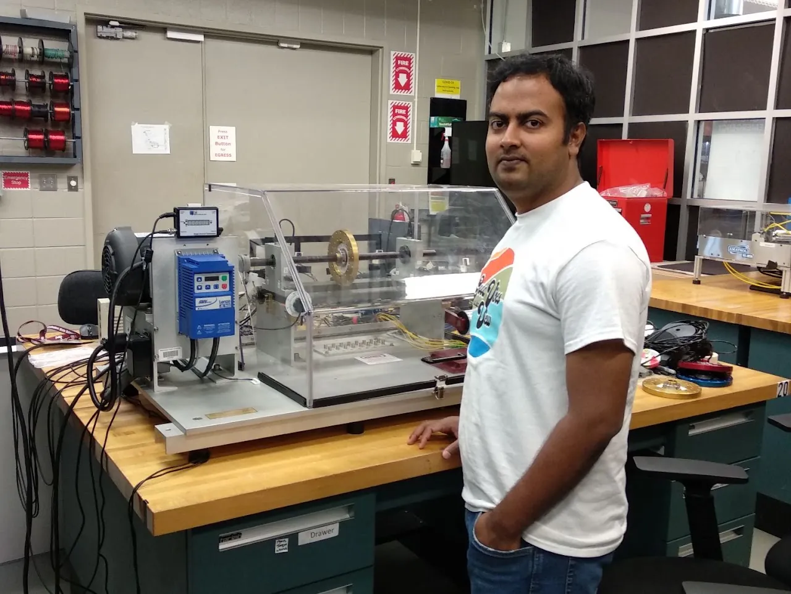

ASTRA LabResearch
AI, digital twins, and data analytics for advanced manufacturing and smart systems
Research Thrusts
Current Projects
Recent work by ASTRA Lab members. Click a figure to enlarge it.
Foundational Work
Selected papers from Dr. Bappy’s doctoral research that the lab builds on.